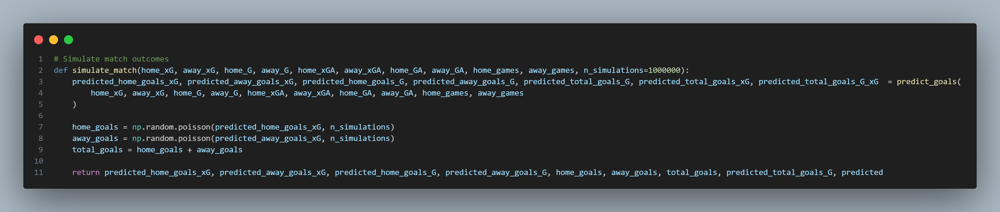
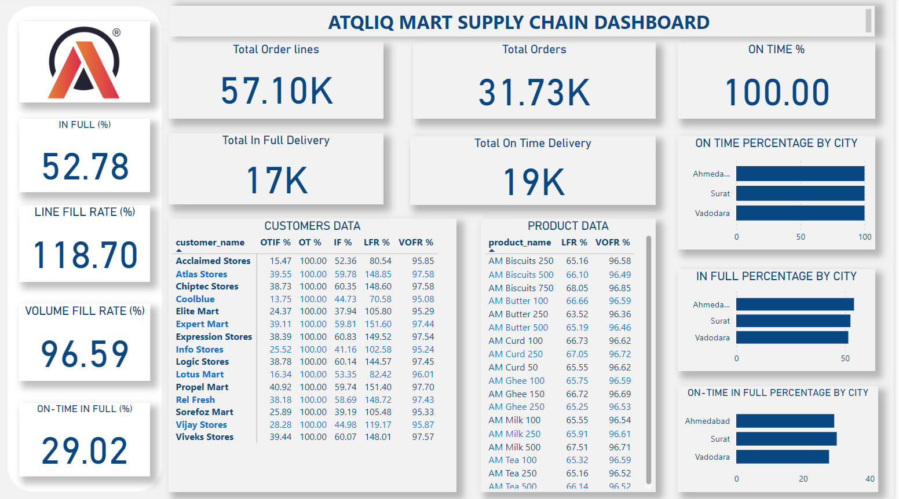

September - December, 2024
xG-Driven Football Match Predictor with Poisson Simulation

This football (soccer) match prediction model leverages historical performance metrics—including expected goals (xG) and actual goals (G)—to simulate match outcomes and calculate probabilities for over/under betting markets. By combining Poisson distribution simulations with weighted adjustments for team performance (e.g., attack/defense ratios, xG efficiency), the model predicts home/away goals and total goals per match. It generates probabilities for key betting thresholds (e.g., Over/Under 2.5 goals) and converts these into decimal odds. The system also accounts for discrepancies between expected and actual performance using a custom-adjusted goals formula, ensuring dynamic adaptability to team form. Built in Python with NumPy and Pandas, this project demonstrates advanced statistical modeling, sports analytics, and risk-calibrated decision-making for sports betting or tactical analysis. various metrics according to the metrics list in the problem statement. Power BI was utilized to create interactive visualizations that effectively communicated the findings from the exploratory data analysis.
July, 2024
ATQLIQ MART SUPPLY CHAIN ANALYSIS

In this project Excel was used to remove duplicates from the dataset, Pandas was employed to conduct an in-depth analysis of the cleaned data, and created various metrics according to the metrics list in the problem statement. Power BI was utilized to create interactive visualizations that effectively communicated the findings from the exploratory data analysis.
July, 2024
TELECOMMUNICATION CHURN ANALYSIS

This project analyzes customer data to identify factors leading to customer churn. The goal was to provide actionable insights to help the company retain customers and reduce churn .
May, 2023
BIKES AND ACCESSORIES SALES ANALYSIS

In this project Microsoft Excel was used to clean and analyze bike sales data to gain insights into sales revenue generated based on buyers educational and marital status.
July, 2023
DATA CLEANING AND EXPLORATION IN SQL
In this project raw housing data was cleaned, transformed and made usable for analysis using SQL.
September, 2023
HOME & OFFICE FURNITURE SALES ANALYSIS

In this project Microsoft Excel & Power BI was used to clean and analyze home & office furniture sales data to gain insights into sales revenue generated.
November, 2023
TRADING WORKBOOK WITH EXCEL

In this project Microsoft Excel was used to create a trading work book which would serve as a cheap alternative for newbie retail traders who lack the neccesarry skill to be profitable and also the finances to purchase back-testing and journaling softwares.
It could serve as a trading journal as well as a back-testing and forward testing sheet.